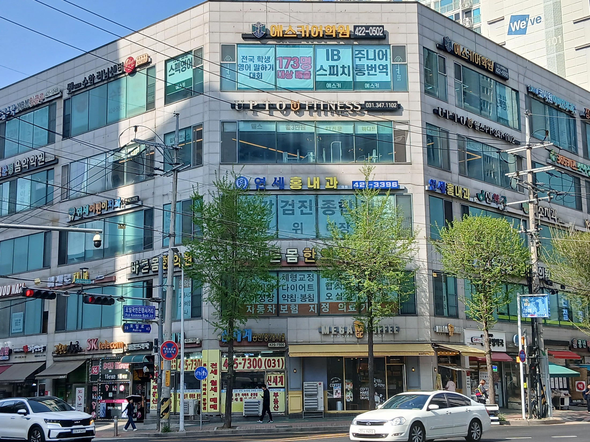
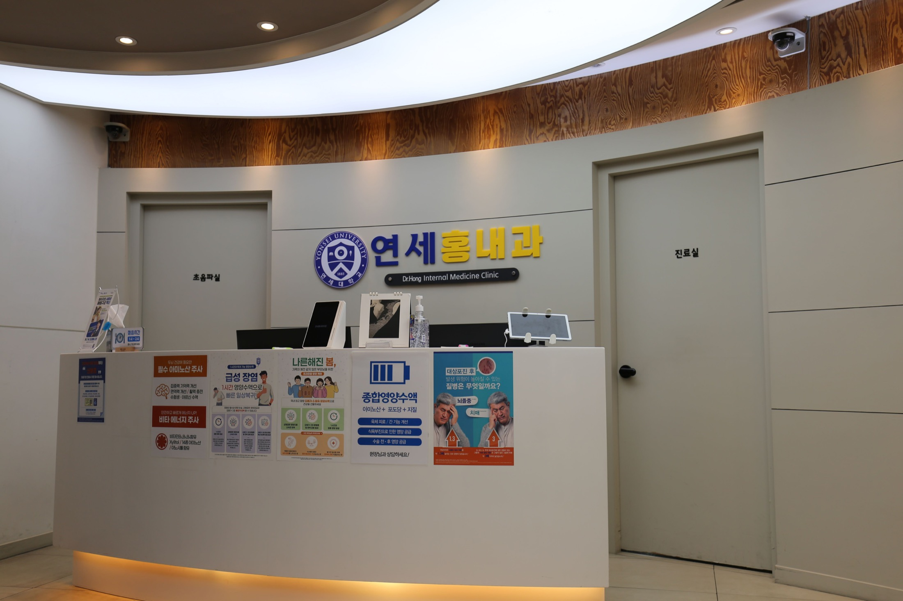
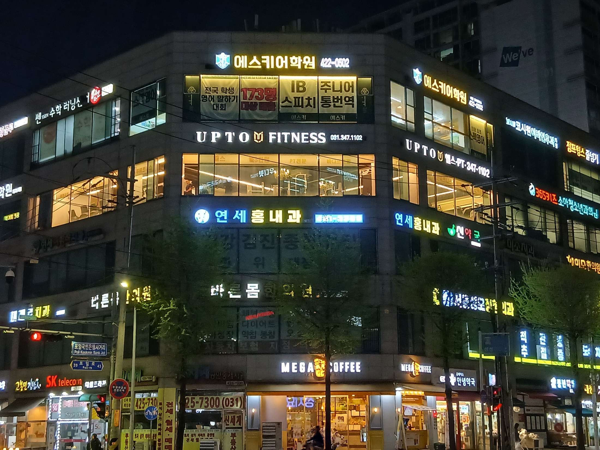
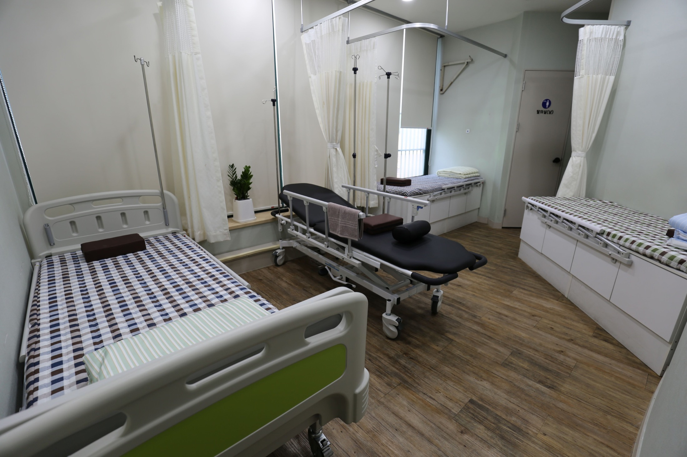
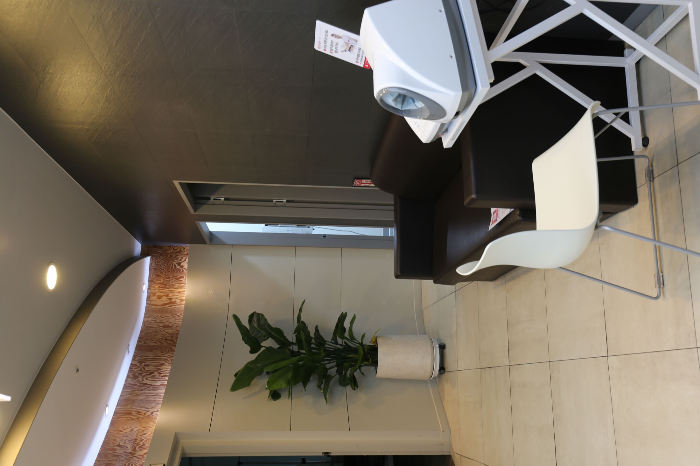
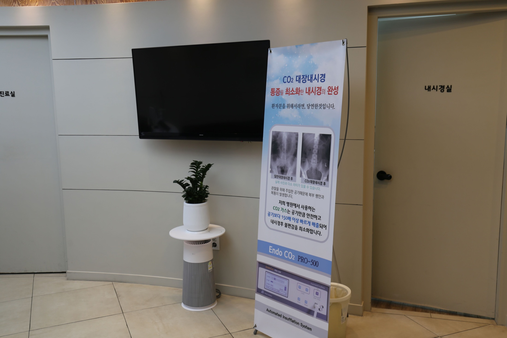
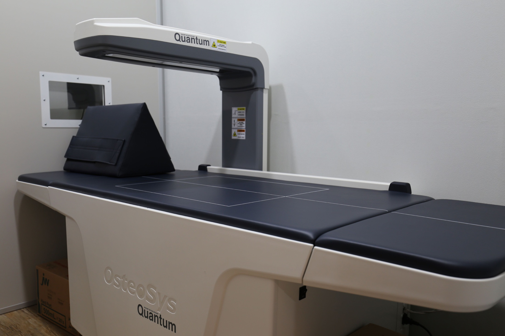
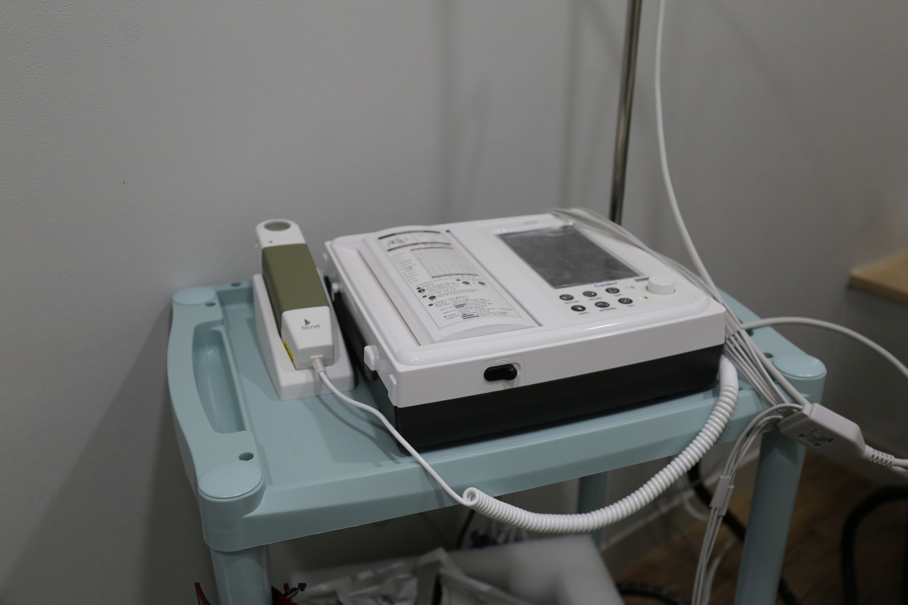
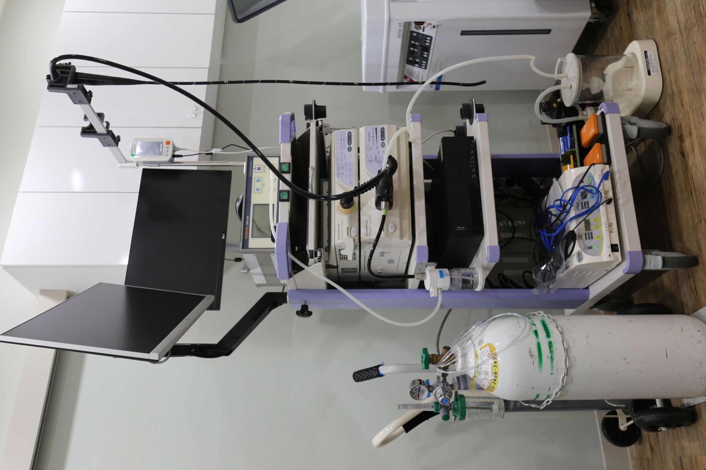
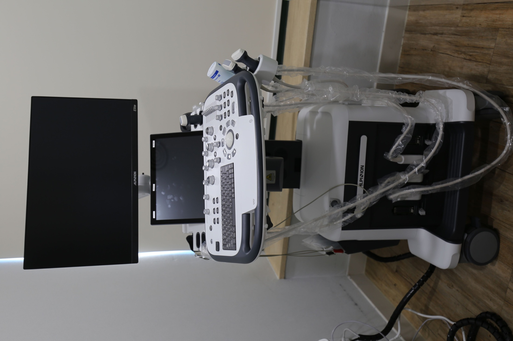

일반 내과 진료
감기, 몸살, 소화기 불편, 호흡기 증상 등 일상에서 자주 만나는 건강 문제를 상담합니다.




경기 의왕시 내손동 내과 의원
일상적인 건강 상담부터 꾸준한 관리가 필요한 내과 진료까지, 편안하게 찾을 수 있는 동네 주치의 공간을 지향합니다.
Care
감기, 몸살, 소화기 불편, 호흡기 증상 등 일상에서 자주 만나는 건강 문제를 상담합니다.
혈압, 혈당, 지질 관리처럼 꾸준한 확인이 필요한 항목을 차분히 살핍니다.
검사 결과 확인, 생활습관 상담, 필요한 진료 연계까지 환자 상황에 맞춰 안내합니다.
Clinic









Visit